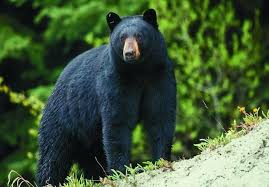
Black Bear
The American black bear is the largest mammal in the Ozarks. These powerful omnivores can weigh up to 300 pounds and are known for their climbing abilities. Black bears are generally shy and avoid human contact, but they are intelligent and curious animals that play an important role in the ecosystem by dispersing seeds and controlling vegetation.
Primarily found in the remote forested areas of the Boston Mountains and White River region, particularly in Arkansas and Missouri. They prefer dense oak and hickory forests.
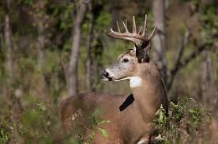
White-tailed Deer
White-tailed deer are the most abundant large mammals in the Ozarks. These graceful herbivores are named for the white underside of their tails, which they raise when alarmed. Deer are active during dawn and dusk and are most visible during the fall rut when males compete for mates. They are crucial to the ecosystem as they control vegetation growth.
Found in forests, clearings, and grasslands across all Ozark regions. They thrive in the mixed hardwood forests and are especially common along the Buffalo and Current Rivers.
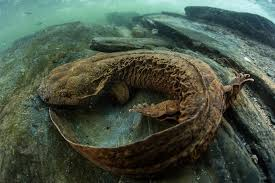
Ozark Hellbender
The Ozark hellbender is a rare, fully aquatic salamander found only in clear, cold streams of the Ozarks. These unique creatures can reach up to 2 feet in length and breathe through their wrinkled skin. They are a crucial indicator species for clean water and are sensitive to pollution, making them an important subject of conservation efforts.
Found exclusively in clean, fast-flowing streams throughout the Ozarks, particularly in Missouri and Arkansas. They require cold, unpolluted water with high oxygen levels.
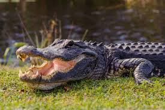
American Alligator
American alligators are the apex predators in Ozark waterways and swamps. These impressive reptiles can exceed 10 feet in length and can live for several decades. Alligators play a vital ecological role by consuming fish, turtles, and occasionally larger mammals. They are usually shy and avoid confrontation with humans.
Primarily found in the warmer southern portions of the Ozarks, in swamps, marshes, and slower moving rivers. They thrive in areas like Horseshoe Lake and the lower White River region.
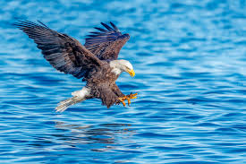
Bald Eagle
The bald eagle, America's national bird, is a majestic raptor with a wingspan that can reach 7 feet. These skilled hunters prey primarily on fish but will also hunt waterfowl and small mammals. Bald eagles have made a remarkable recovery from near extinction and are now commonly seen soaring over Ozark waterways, especially during winter months.
Found year-round near major waterways including Table Rock Lake, Bull Shoals Lake, and the White River. Winter populations increase significantly as eagles migrate from northern regions.
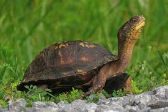
Eastern Box Turtle
Eastern box turtles are iconic reptiles of the Ozarks known for their domed shells with radiant patterns. These slow-moving herbivores and omnivores spend most of their time on the forest floor searching for food. Box turtles are long-lived, often reaching 100 years or more, and remain in the same home range throughout their lives.
Distributed throughout the Ozarks in moist woodlands, particularly in areas with rich leaf litter and access to water sources. They are often found crossing roads in spring and early summer.
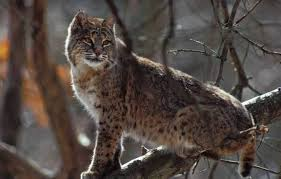
Bobcat
Bobcats are elusive wild cats native to the Ozarks, recognizable by their spotted coat and distinctive tufted ears. These solitary hunters are primarily nocturnal and prey on rabbits, squirrels, and other small mammals. Though rarely seen, bobcats are actually quite common throughout the region and are a sign of a healthy ecosystem.
Found in diverse habitats across all Ozark regions including mixed forests, rocky areas, and near human settlements. They have adapted well to the varied terrain and forest types of the Ozarks.
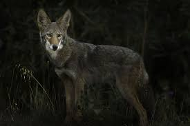
Coyote
Coyotes are highly adaptable canines that have successfully established populations throughout the Ozarks. These intelligent omnivores are known for their distinctive howling and yipping vocalizations, particularly at dawn and dusk. Coyotes help control populations of rodents and rabbits, making them ecologically beneficial despite their often negative reputation.
Found throughout the entire Ozark region in forests, grasslands, and even near human settlements. Their adaptability has made them one of the most successful carnivores in North America.
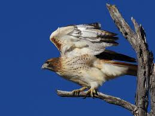
Red-tailed Hawk
The red-tailed hawk is one of the most common raptors in North America and is frequently seen soaring over Ozark meadows and forests. These powerful predators have distinctive red tail feathers and keen eyesight. They hunt small mammals, rodents, and birds, and are important for controlling rodent populations in agricultural areas.
Found throughout the Ozarks in open areas, forest edges, and near agricultural lands. They are commonly seen perched on utility poles along roads and highways.
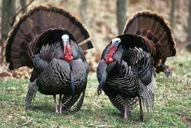
Wild Turkey
Wild turkeys are large, iconic game birds native to the Ozarks. These intelligent birds are known for their distinctive gobbling calls and impressive courtship displays. Males can weigh up to 20 pounds and display elaborate plumage. Wild turkeys roost in trees at night and forage on the ground for seeds, nuts, and insects.
Found in mixed hardwood and pine forests across all Ozark regions. They are most active at dawn and dusk, and their populations have made a remarkable recovery in recent decades.
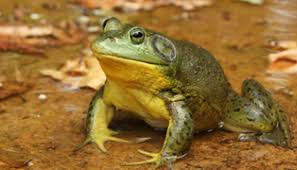
American Bullfrog
The American bullfrog is the largest frog species in North America and is easily recognized by its deep, resonant "jug-o-rum" call. These large amphibians can reach up to 8 inches in length. Bullfrogs are powerful jumpers and voracious predators that eat insects, smaller frogs, and even small mammals. They can live 15 years or more.
Found in permanent and semi-permanent water bodies throughout the Ozarks including ponds, marshes, lake margins, and slow-moving streams with aquatic vegetation.
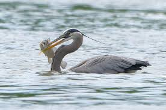
Great Blue Heron
The great blue heron is a large wading bird commonly seen hunting along Ozark waterways. These graceful hunters have a wingspan of up to 5.5 feet and stand nearly 4 feet tall. They hunt fish, frogs, crayfish, and aquatic insects by standing motionless in shallow water and striking with lightning-fast precision. Their slow, deliberate flight is distinctive and unmistakable.
Found year-round along major waterways including the White River, Current River, Buffalo River, and various Ozark lakes. They are often seen at dawn and dusk hunting in shallow waters.
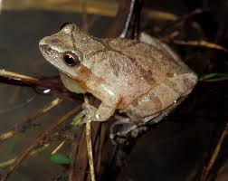
Spring Peeper
Spring peepers are tiny tree frogs barely an inch long, but their high-pitched peeping calls are one of the first signs of spring in the Ozarks. These frogs have adhesive toe pads that allow them to climb vegetation. During breeding season, their chorus creates a deafening sound that echoes across wetland areas. They eat small insects and spiders.
Found in and around temporary and permanent wetlands, swamps, and moist woodlands throughout the Ozarks. They migrate to breeding ponds in early spring.